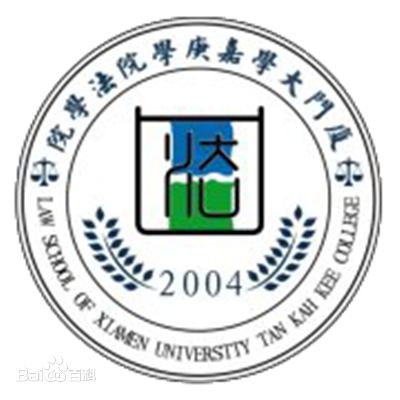
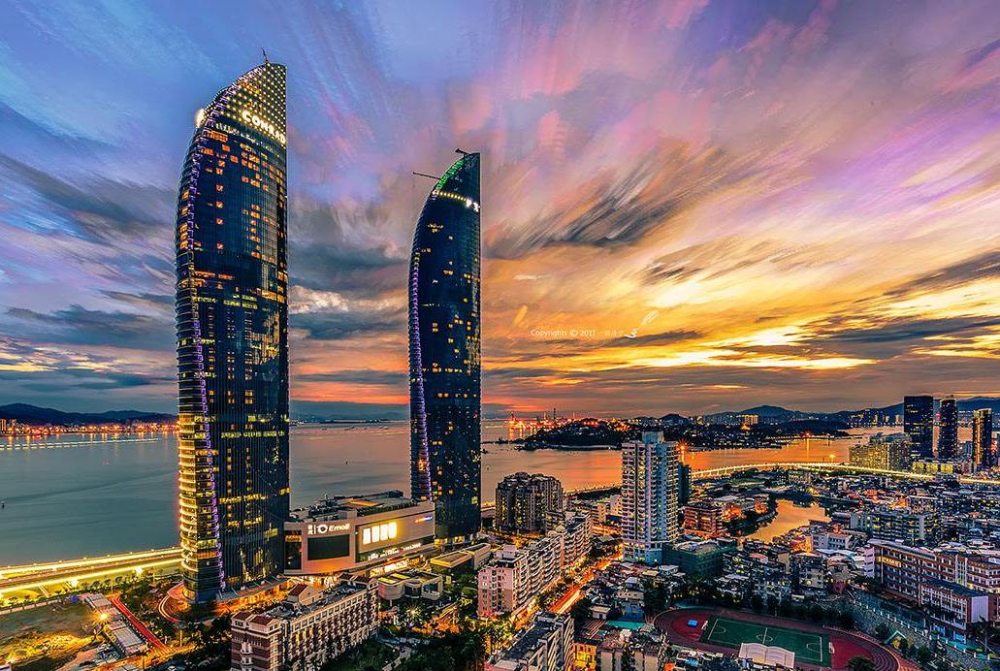
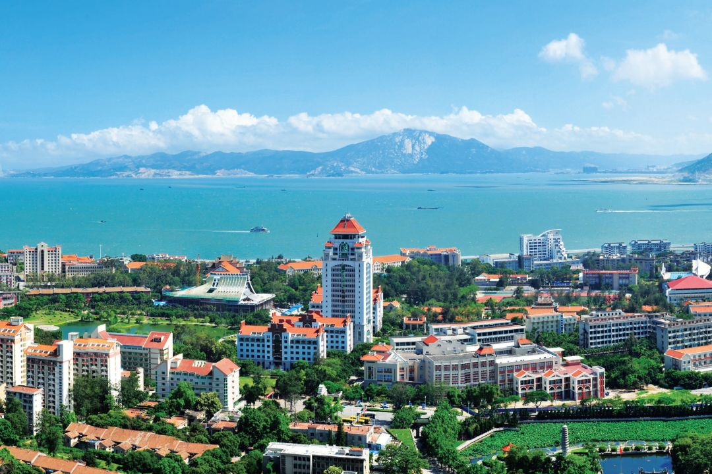
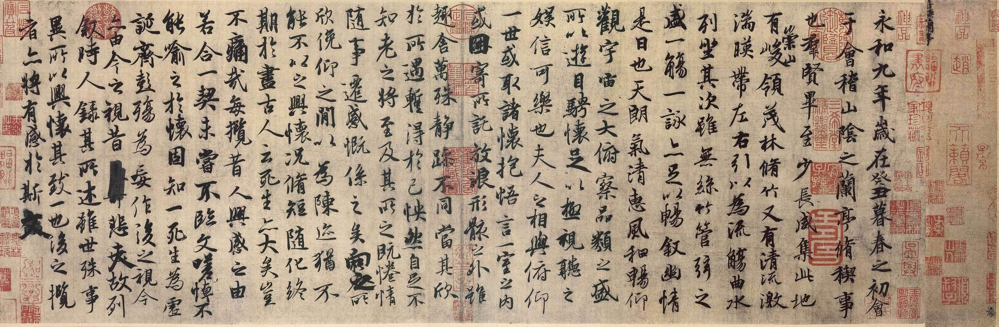

法学，是关于法律的科学。是以法律、法律现象以及其规律性为研究内容的科学。法律作为社会的强制性规范，其直接目的在于维持社会秩序，并通过秩序的构建与维护，实现社会公正。作为以法律为研究对象的法学，其核心就在对于秩序与公正的研究，是秩序与公正之学。
在中国，法学思想最早源于春秋战国时期的法家哲学思想，法学在中国先秦时代被称为“刑名之学”，从汉代开始有“律学”的名称。在西方，古罗马法学家乌尔比安（Ulpianus）对“法学”（古代拉丁语中的Jurisprudentia）一词的定义是：人和神的事务的概念，正义和非正义之学。
法学的培养目标是培养德才兼备，具有扎实的专业理论基础和熟练的职业技能、合理的知识结构，具备依法执政、科学立法、依法行政、公正司法、高效高质量法律服务能力与创新创业能力，熟悉和坚持中国特色社会主义法治体系的复合型、职业型、创新型法治人才及后备力量。
厦门大学嘉庚学院法学院成立于2004年，下设法学和行政管理两个专业。 目前学院共有专任教师22名，其中拥有博士以上学历的占50%，副教授 8人。所有教师均毕业于国内外著名高等学府，且多名教师拥有德国、英国、荷兰、日本等海外学术背景，学术成果丰硕，多篇学术论著被SSCI、CSSCI、ISSHP收录。此外，法学院还聘请了众多经验丰富的实务部门兼职教师。
法学院以培养应用型高级专门人才为目标，以法律、管理和经济作为基础，注重学生的调查研究能力、人际沟通能力、文字表达能力和协作创新能力，注重素质教育与专业教育，专业知识与相关的其他学科知识，传统学科知识与新兴学科知识，知识、素质与智慧、技能，理论与实践教学，本土化培养与国际化培养相结合。多年来，面向政府、事业单位、企业、社会团体和社区输送了一批又一批的人才。
法学院致力于教学模式的改革和创新，将实践教学贯穿于课堂内外。法学专业首开国内法学本科教育先河，创设讨论课；行政管理专业则开展了公益服务等实训教学课程。此外，法学院还同福建省高级人民法院、厦门市中级人民法院等单位合作，建立了28家实习基地。
厦门，简称“厦”或“鹭”，别称鹭岛，是福建省下辖地级市、副省级市、计划单列市，国务院批复确定的中国经济特区，东南沿海重要的中心城市、港口及风景旅游城市 。截至2020年，厦门市全市下辖6个区，总面积1700.61平方千米，建成区面积397.84平方千米。 根据第七次全国人口普查数据，截至2020年11月1日零时，厦门市常住人口为5163970人。 2020年，厦门市实现地区生产总值（GDP）6384.02亿元。
厦门地处中国华东地区、福建省东南部，由本岛（厦门岛）、离岛鼓浪屿、西岸海沧半岛、北岸集美半岛、东岸翔安半岛、大嶝岛、小嶝岛、内陆同安、九龙江等组成，陆地总面积1700.61平方千米，海域面积390多平方千米。厦门通行闽南语厦门话，与漳州、泉州同为闽南地区的组成部分。
厦门是国家综合配套改革试验区、国家物流枢纽、东南国际航运中心、自由贸易试验区、国家海洋经济发展示范区、两岸新兴产业和现代服务业合作示范区、两岸区域性金融服务中心和两岸贸易中心。截至2018年，厦门的综合信用指数在36个省会及副省级城市排名第2，营商环境居副省级城市第1位，外贸综合竞争力居全国第5位，厦门港集装箱吞吐量位居全球第14位。
2018年，厦门被重新确认为国家卫生城市（区）。 2020年，厦门市被住房和城乡建设部命名为国家生态园林城市， 被全国双拥工作领导小组办公室授予厦门“全国双拥模范城市”。被中央依法治国委员会选为第一批全国法治政府建设示范地区和项目名单。
 足球（Football[英]、 Soccer[美]）是一项以脚为主，控制和支配球，两支球队按照一定规则在同一块长方形球场上互相进行进攻、防守对抗的体育运动项目。因足球运动对抗性强、战术多变、参与人数多等特点，故被称为“世界第一运动”。 现代足球的前身起源于中国古代山东淄州（今淄博市）的球类游戏“蹴鞠”，后经阿拉伯人由中国传至欧洲，逐渐演变发展为现代足球。现代足球始于英国。 1848年，足球运动历史上第一部文字形式的规则《剑桥规则》诞生。1863年10月26日，英格兰成立了世界上第一所足球协会，并统一了足球运动的竞赛规则。 1872年，英格兰与苏格兰之间举行了足球史上第一次协会间的正式比赛。1900年，在第二届夏季奥林匹克运动会中，足球被列入正式项目。足球在全球被广泛译为“Football”，只有在美国等极少数国家被译为“Soccer”，而“Football”在美国、加拿大被指为“美式橄榄球”。
书法是中国及深受中国文化影响过的周边国家和地区特有的一种文字美的艺术表现形式。包括汉字书法、蒙古文书法、阿拉伯书法和英文书法等。其“中国书法”，是中国汉字特有的一种传统艺术。
从广义讲，书法是指文字符号的书写法则。换言之，书法是指按照文字特点及其含义，以其书体笔法、结构和章法书写，使之成为富有美感的艺术作品。汉字书法为汉族独创的表现艺术，被誉为：无言的诗，无行的舞；无图的画，无声的乐等。
